It is necessary to have the two event graphs already loaded. The first graph was created during the Event Graph Tutorial and is called ArrivalProcess. The second graph is SimpleServer. Both of these can be loaded from the 'examples' directory. If you don't have both of these loaded, please do so now.
When the event graphs have correctly loaded, there will be ArrivalProcess and SimpleServer icons in the upper left panel under "Event Graphs". This indicates they have been imported into the Java classpath and can be used to build an assembly. This is indicated in Figure 1.
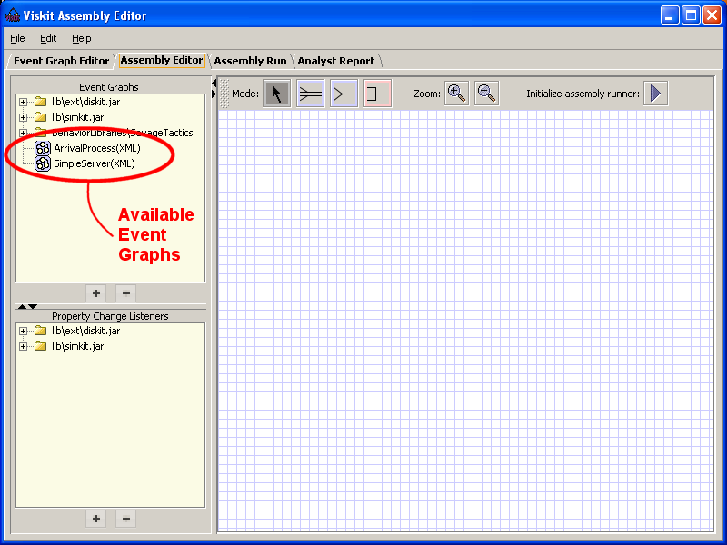
Figure 1. Availabiliy of Event Graphs in Assembly Editor.
First lets see what a finished assembly looks like. Use and go to examples directory as before (up 3 levels), select and open ServerAssembly.xml. You will see the view in Figure 2.
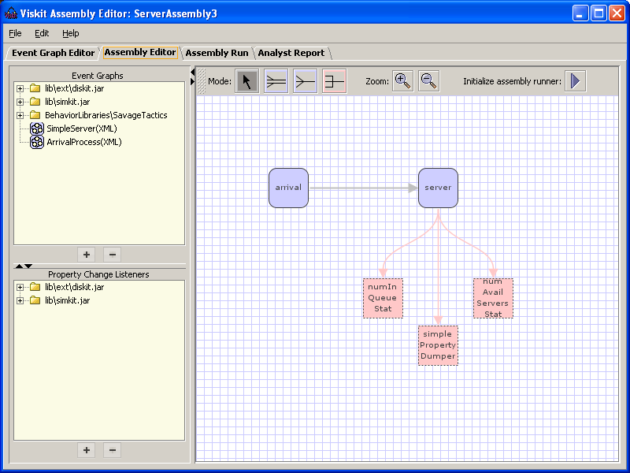
Figure 2. ServerAssembly.xml in the Assembly Editor.
When you double click on various nodes in the graph a description popup is displayed. In this case, there are two different types of popups. The blue boxes display an Event Graph Inspector (see Figure 3). The pink boxes generate a Property Change Listener (PCL) Inspector (see Figure 4). The popups allow various parameter to be inspected or modified.
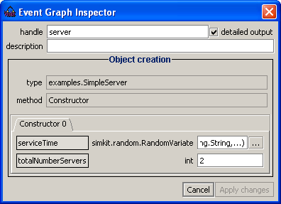
Figure 3. Event Graph Inspector for the 'sever' event.
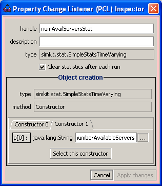
Figure 4. Property Change Listener for 'numAvailServersStat'.
The purpose of the 'Assembly Editor' is to connect the needed event graphs and establish the proper listeners for the data of interest. Once that is completed, the simulation is run. This example is now ready to run. That is done by using the 'Initialize assembly runner' icon . Once the button is pressed, Viskit automatically changes tot he 'Assembly Run' tab. (A full description of the 'Assembly Run' tab is in Section 4.)
Click on the VCR Run button to start the simulation. The simulation will take several minutes to run. While it is running you will see a result something like Figure 5. You may choose to de-select the 'Verbose output' check box to reduce the quantity of the output.
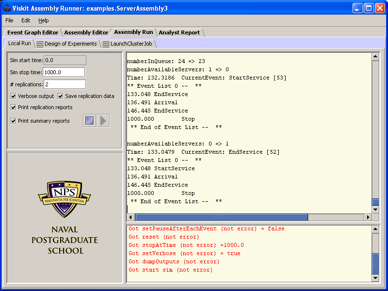
Figure 5. Assembly run screen during a simulation run.
We will now create an assembly. First go back to the 'Assembly Editor' tab. It is not necessary to delete or otherwise modify the existing ServerAssembly graph. A new assembly is created with . The 'Assembly Properties' panel is displayed (see Figure 6). Set the name to 'MyServerAssembly' and the package to 'hello.world', and apply the changes. An empty assembly graph is now presented to the user.
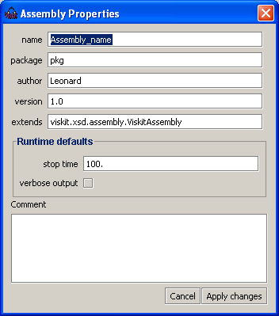
Figure 6. New assembly properties panel.
Drag and drop the 'ArrivalProcess(XML) behavior to the assembly graph. For ease of process, it should go near the upper left. Do the same for the 'SimpleServer(XML)' behavior to the upper right. Figure 7 shows the process.
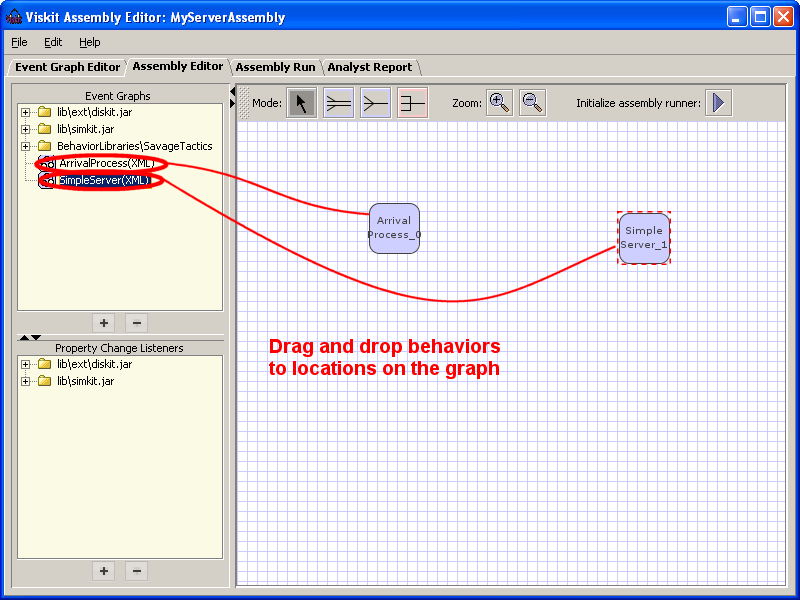
Figure 7. Process of adding behaviors to the assembly.
The two events need to be connected. Select the "Connect Assemblies with Adapter Pattern" 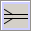 icon and draw a line from the "Arrival Process" event to the "Simple Server" event. This will bring up the "Adapter Connection" popup (see Figure 8).
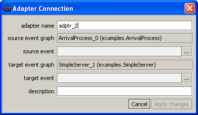
Figure 8. Adapter Connection popup allows you to enter adapter-specific information.
Select the button after "source event", then select "Arrival" from the popup. Click on "Apply changes" to insert it back into the "Adapter Connection" window. Follow the same steps for the "target event" field, and click on "Apply changes" on the "Adapter Connection" window.
Click on the Select icon, and double-click on the "Arrival Process" event box. That will bring up the "Event Graph Inspector" (see Figure 9). Now click on the button after simkit.random.RandomVariate field. Set the "method" field to "factory" using the drop-down list in the "Object Inspector". Press the 'Enter' key to indicate acceptance of the "Factory class" field (see Figure 10). A "Factory methods" popup will display (see Figure 11). This window allows you to select the actual Java means for generating the values. Choose the entry getInstance(java.lang.String,java.lang.Object[],simkit.random.RandomNumber) and click "OK" to use.
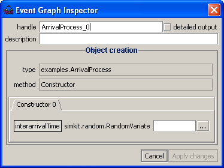
Figure 9. Event Graph Inspector window does ???
Figure 10. Object Inspector selects means for constructing variable??
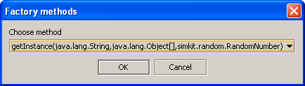
Figure 11. Java-specific means for generating random variable??
In the field java.lang.String enter simkit.random.Normal3Variate. Click on the button after java.lang.Object[]. That brings up the Array Inspector window. Enter '2' in the field for 'Array length' and press 'Enter'. Two new fields will be present in the window (see Figure 13). These fields are the two parameters that describe a normal distribution. The first paramter (top field) is the mean. The second paramter (bottom box) is the standard deviation. Type new Double(5.0) in the top of the two new boxes. In the bottom box type in new Double(.5).
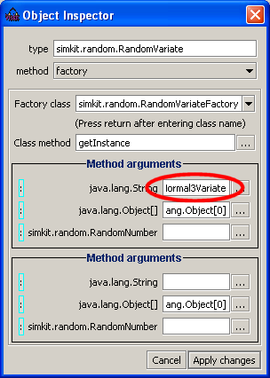
Figure 12. Define random number generator.
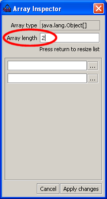
Figure 13. Normal distribution parameter (mean and standard deviation) entry.
The random number method (simkit.random.RandomNumber) field must be filled in. Click on the button. Using the drop-down, set the method to 'factory' (see figure 14), then select the simkit.random.RandomVariateFactory class. The 'Factory methods' dialogue window will popup. Click 'OK'.
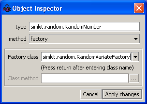
Figure 14. Define RandomNumber method.
Don't know what to do next. There appear to be problems in the Object Inspector, and clicking on 'Apply changes' doesn't popupate the other Object Inspector window.
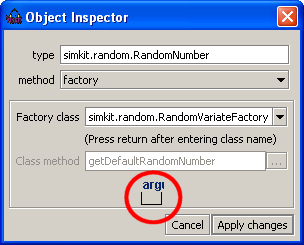
Figure 14. Problem here.
Apply the changes to the 'Array Inspector' and 'Object Inspector' dialogue windows. To apply the changes to the 'Event Graph Inspector' dialogue window, first click in the 'description' field, then click on the 'Apply Changes' button.